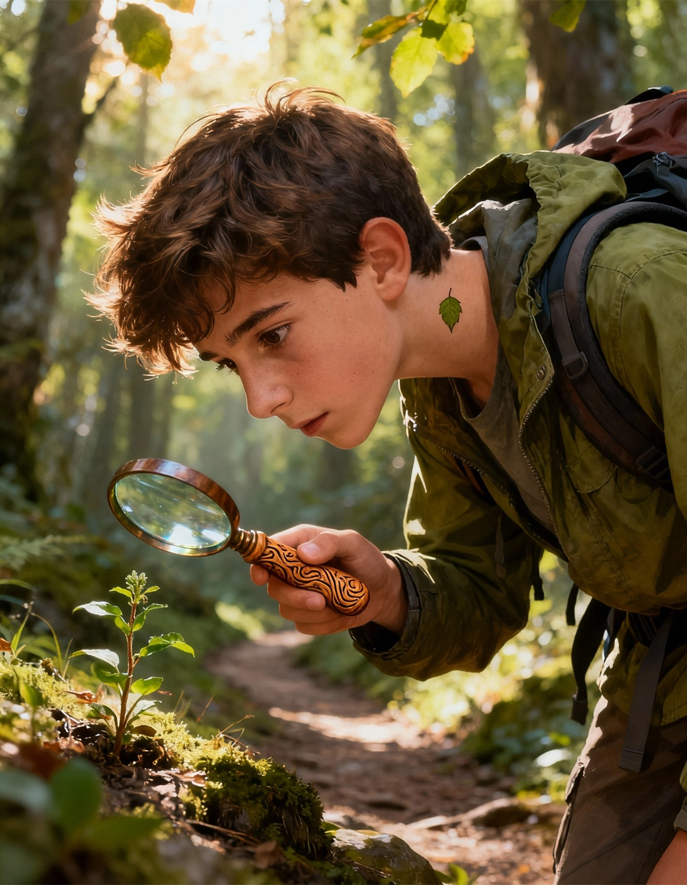
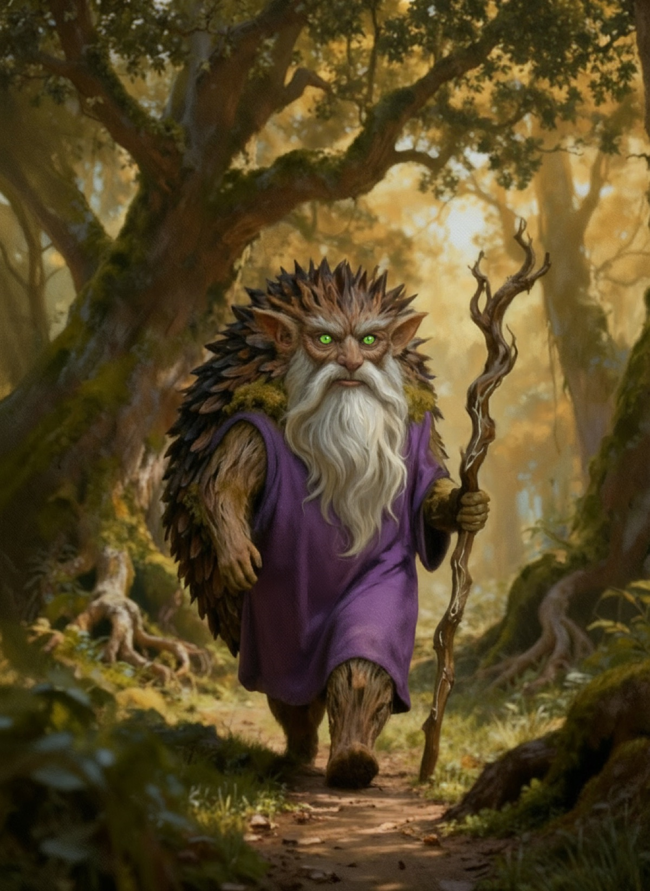

Enciclopedia de Personajes
Habitantes de Monte Redondo - "Los Portadores del Ojo Verde"

Un joven marcado con el enigmático Ojo Verde. Emprende un peligroso viaje hacia las cumbres para encontrar a los otros Portadores y recuperar Las Trufas Doradas.
Acompaña a Unai en su misión. Aunque no posee la marca y no puede ver ni oír los velos del mundo mágico, su vínculo y valentía son vitales para la aventura.

Entidades ancestrales de los que dependen los humanos para sobrevivir. Su hogar, Monte Redondo, muere lentamente, esperando ser restaurado por la magia antigua.